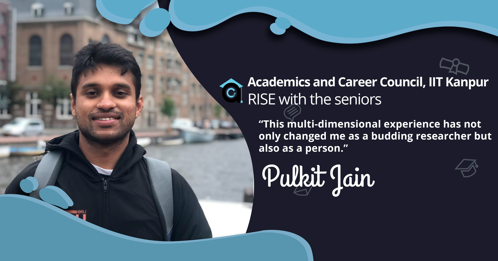
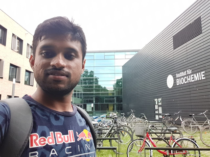
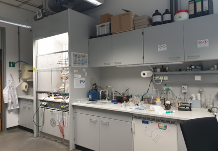
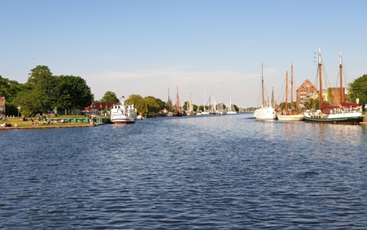
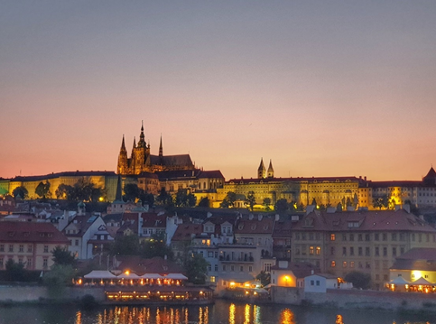

An account from the German coast's best kept secret | Pulkit Jain
April 18, 2020
I spent my Summer of 2019, a full two and a half months at Bioinorganic Chemistry
Research group at the University of Greifswald, working on the synthesis of novel
NHC(N-Heterocyclic Carbene) dithiolene compounds for reduction of nitrogen to ammonia.
The project was based on the combination of my interest in small molecule activation
along with the group's main focus - Bioinorganic Chemistry. Phew! I know that sounds
heavy but don't worry, I am here to share my experience and that might be helpful when
you come at a crossroads in your Summers.
Getting the Internship
Since I had an immensely motivating experience in my past internship at IIT Bombay,
which revolved around Synthetic Inorganic Chemistry, I was determined to look for an
academic internship for next year's summer intern too. With the aspirations to explore
my department further and not drift towards other options (like sitting for the SPO
internship season), I started applying for an academic research internship. I searched
for groups working on ‘Small Molecule Activation’. As my primary objective, I worked
towards preparing relevant documents such as my cover letter and research CV. Inputs
from seniors proved to be very helpful while developing these documents with utmost
cogency. Since my grades were decent but not exceptional, I focussed mainly on mailing
different labs across the world rather than focusing on various research internship
programs (I did apply to all the programs though :P). I sent most of the mails during
the vacations (midsem and winters) but received my first proper response at the start of
January. By the end of March, I received my VISA, and yeah, I was on cloud nine.

For all of my juniors who are reading this, I would like to stress on a few important
things to keep in mind while mailing professors:-
- The timing of mail should be adjusted according to the time zone of the
professor's country. All the mails I sent unknowingly during the new year and
Christmas period went unattended, so keep in mind to not send emails during that
period(This period could be different from country to country)
- The cover letter should be presented as indigenous and lucid to the receiver,
i.e., the professor should feel the mail is intended especially towards him/her.
At the end of my internship, my professor told me that the major reason she
offered me the internship was the utmost desire I showed her while applying,
which only comes if your mails are well framed and characteristic/unique.
- Being Resilient while sending mails. I remember sending some 120 odd letters
before getting a positive response. In most of the cases, your mails may go
unattended by the professors while some may respond, although not with any
positive news, and others may not offer you any support. Therefore, don't get
dejected and be resolute throughout to get a prompt response.
I cannot emphasize enough the importance of consistent mailing and timely
reminders. Therefore, it is essential not to wait for the results of the
programs and to keep mailing until you receive an offer.
Although one may perceive applying to programs as an effort in vain, It
distinctly helped me improve at things like making an SOP required for various
programs and meet application deadlines (especially with the recommendations
:P).
- It is also imperative to not get distracted by your batchmates sitting in the
SPO intern season as many of them would receive confirmed offers much before you
do and would be having fun: gaming nights, binge-watching movies, phatta,
football, and whatnot.
Experience of working in the lab
About the workplace:
My lab was situated at the Institute for Biochemistry, University of Greifswald.
Initially, I was a bit skeptical of the university's rank, but having spoken with a
senior who had earlier been an intern there, I went ahead with the plan. Few days after
working in the chemistry lab, I realized how naive it would have been to reject the
opportunity based on ranking. In Germany, the funding and research facilities are
provided by the government without any bias between the universities. The labs were well
equipped with characterization facilities, glassware, cleaning equipment (we even had a
dishwasher for washing dirty lab glassware :) ) and the safety features. The systematic
adherence to safety protocols, proper cleanliness organizational measures made the lab
environment very conducive for working.

About my work:
Before commencing, I received a hands-on safety lecture by one of the junior professors
in the group. He explained things such as handling the fire extinguishers, the use of
fumehood's window for the protection of face, safe disposal of the broken glassware, and
other rudimentary guidelines. From the first day itself, I acquired a decent amount of
workload that my mentor had already planned for me. My main task was to synthesize a
dithiolene molybdenum carbonyl complex and attach an NHC(N-heterocyclic Carbene) group
to it and test it for Nitrogen activation. Working with the NHCs requires extremely
air-sensitive conditions in which my mentor trained me. The training included drying of
solvents, i.e., making it water-free, using the schlenk lines and glove box. I also
worked with the photochemical apparatus, which was used to perform the light-induced
reactions. After completing the experiments, I used to jot down the details of the
reactions in my lab journal, which was a vital task that would prove to be helpful while
organizing and drafting my next reaction. A typical reaction would take about 3-4 days
to complete after which it could be kept for crystallization. From my experience, the
crystallization of air-sensitive compounds was one of the most challenging tasks I came
across.
After days of hard work, finally, I had my ‘Eureka moment’ when the X-ray results of the
crystals displayed the success of my experiment, I had synthesized a mono-NHC complex,
i.e., one NHC group attached to Molybdenum. I was able to characterize it with IR and
NMR techniques.
During the internship period, many guest lectures were organized at the institute. Since
these lectures were attended by nearly all the UG & PG students of the department, this
inculcated a fresh and rewarding practice, which I made sure to sustain even after
returning to India. For those of you aspiring for higher studies, I would highly
recommend attending these guest lectures that regularly take place in our institute.

Challenges faced:
It was not a very straightforward ride for me from the beginning as I faced two
significant challenges in adapting to the work culture of the lab(or you can say Germany
in general). The first one being the early work hours. Most of the professional
activities closed in by the evening(except public transport) contradictory to our
lifestyle back home. Secondly, performing the experiments independently. Since I was
well equipped due to my meticulous training, my mentor expected me to handle even the
costliest and most sensitive of the instruments on my own. This was a bit of a contrast
to what I had been acquitted to till then. The support of my mentor ensured that I fared
well.
Life outside the lab
Living all by myself was a fantastic experience which came with its own set of
challenges and learnings. I cooked breakfast and dinner myself (due to exorbitant
prices), and as much as I enjoyed cooking, it dawned upon me how difficult it is to cook
Indian food. :-)

At lunch, I was usually accompanied by two fellow bachelor students and we enjoyed
interesting discussions about their lives as undergraduates at the university dining
hall. On weekends, I used to hang out with my group mates at the city harbor, which was
a beautiful place with vintage ships converted into restaurants. We used to have a beer
and relax there. We had some very intriguing discussions on scientific and
non-scientific subjects, which eventually grew our bond.
Traveling is very costly in Europe, but you can cut down your expenses if you plan well.
I visited Rugen and Usedom, two islands situated in the 40 km proximity of Greifswald.
During my trip to Rugen which involved a 16 km trek, I met a hearty German couple from
Cologne. I used to believe that Germans hold a reserved personality, but this couple
broke this dilemma. I had fun chatting with them throughout the trek.
I also managed to visit the neighboring countries; the Netherlands, Denmark, and
Czechia. The experience of visiting each country was unique, and I learnt many new
things and made numerous memories.
Summing Up
While it was a hard and cumbersome process to get this internship, if I were asked to
describe my experience in one word, it would be
"Amazing”. Living independently in a
culturally different environment helped me view things from different lenses and brought
out the compassion in me.

I developed a more holistic view of my subject and how research is done. I experienced
different cultures and met new people. This multi-dimensional experience has not only
changed me as a researcher but also as a person. The foreign internship was one of a
kind experience for me, and I hope it turns out to be exhilarating for you, too, in case
you are planning to take it up.
Acknowledgments
I am indebted to
Prof. Carola Schulzke for providing me this fantastic opportunity.
Without her support, it would have been impossible for me to have gained much
experience. I thank the
University of Greifswald and
Prof. Schulzke for arranging the
financial assistance, which helped me cover my subsistence costs. I would also like to
thank
MSc. Benedict Elvers, my mentor and an exemplary inorganic chemist who had been so
patient with me throughout my journey and also in whom I found a great friend.
-Pulkit Jain
edited by Akshat Goyal